Getting Started
With ELK
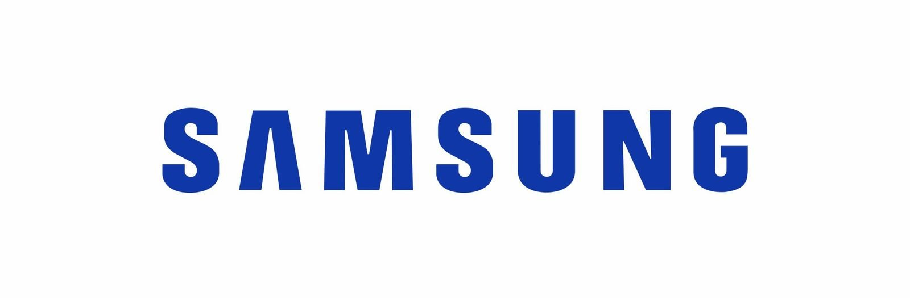
Ryan MacLean
Senior Engineer
Samsung Research Canada

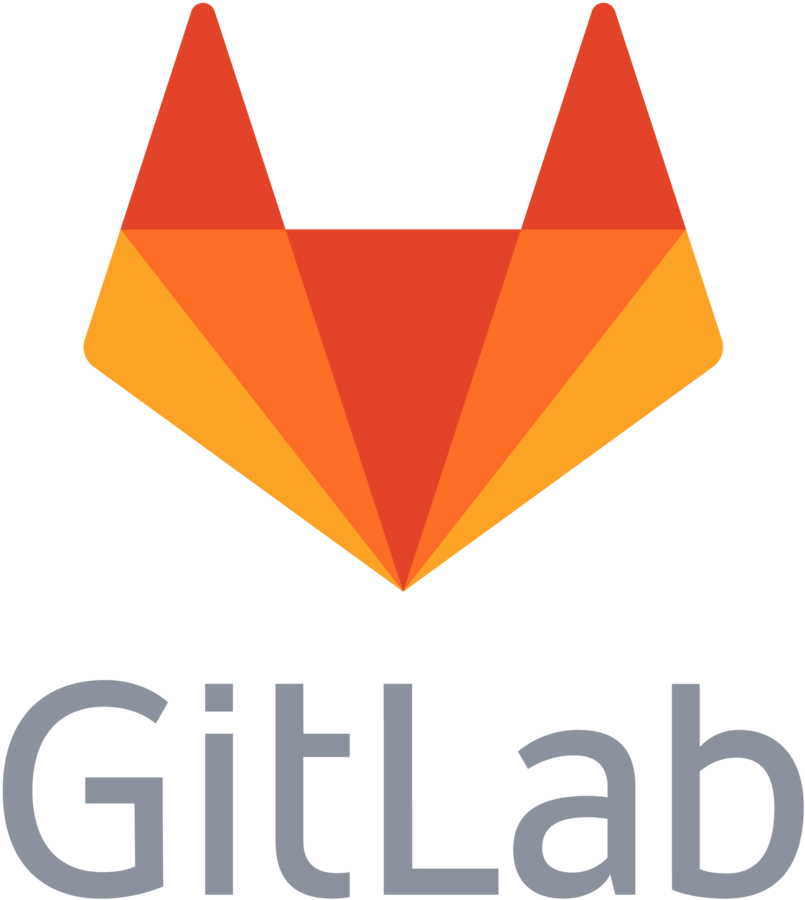
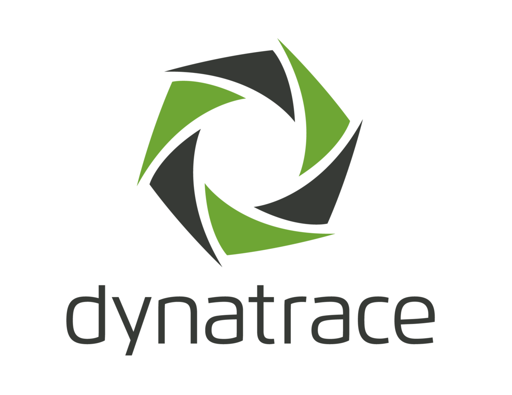
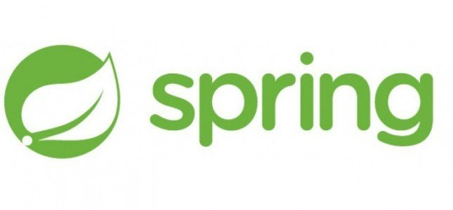
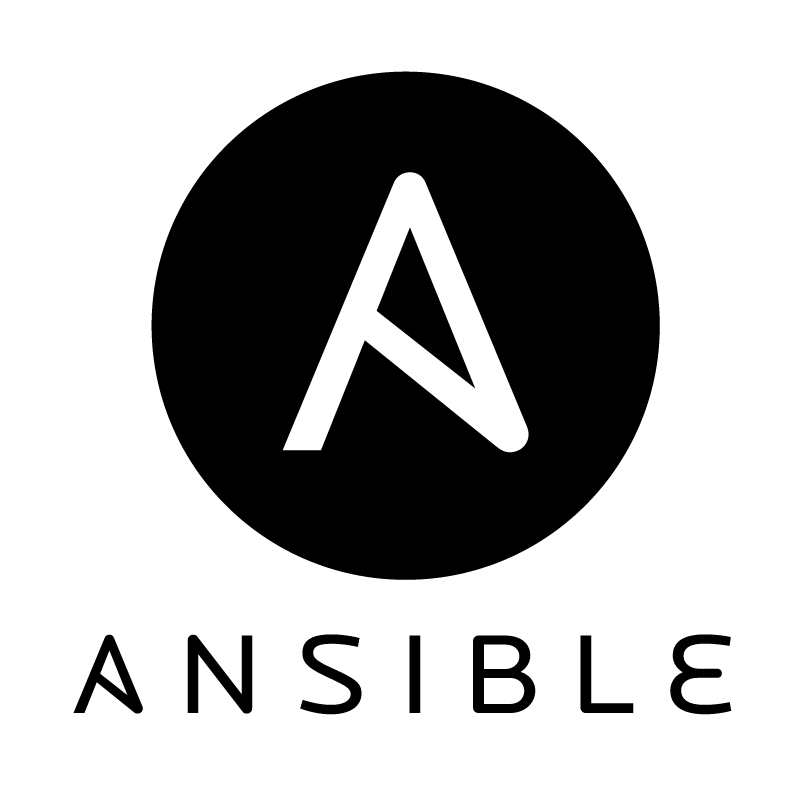
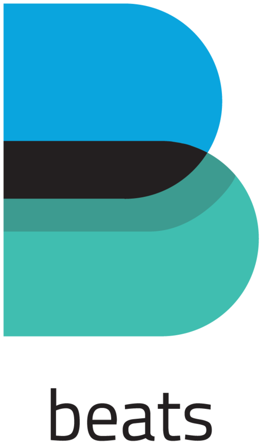
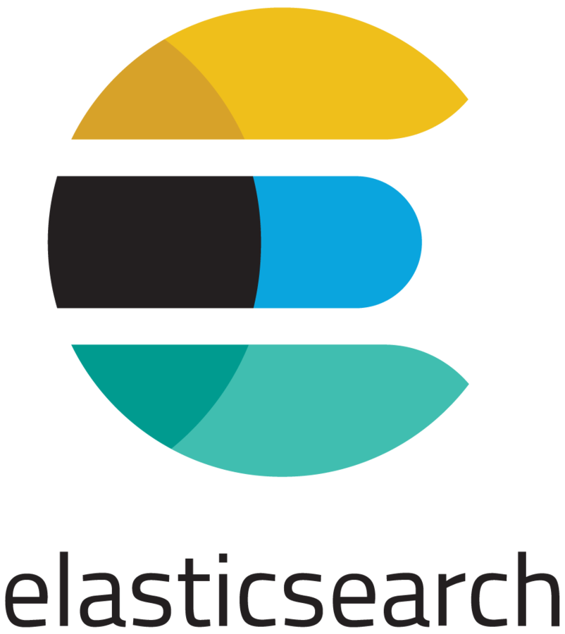
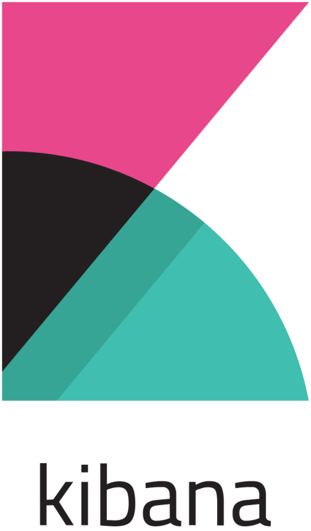
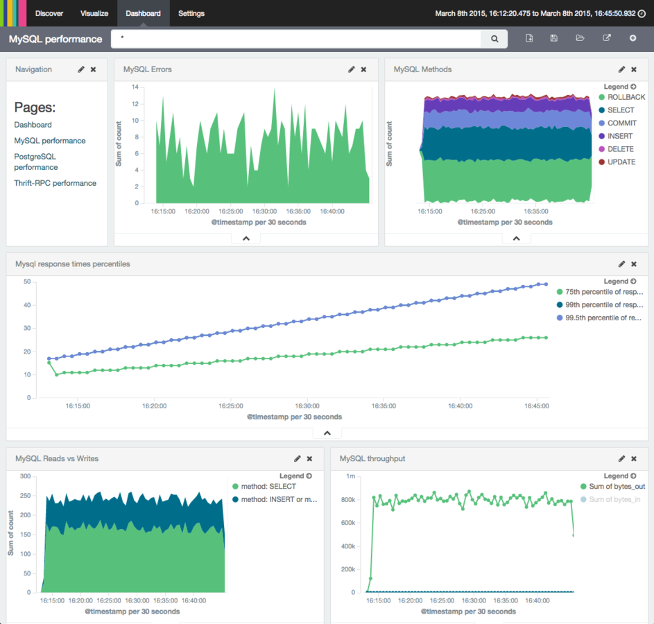
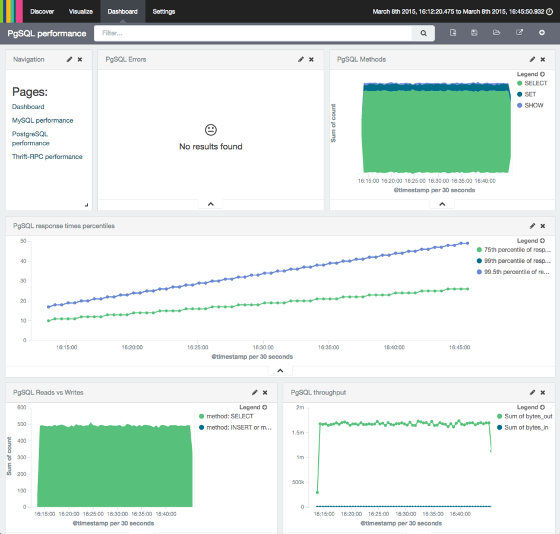
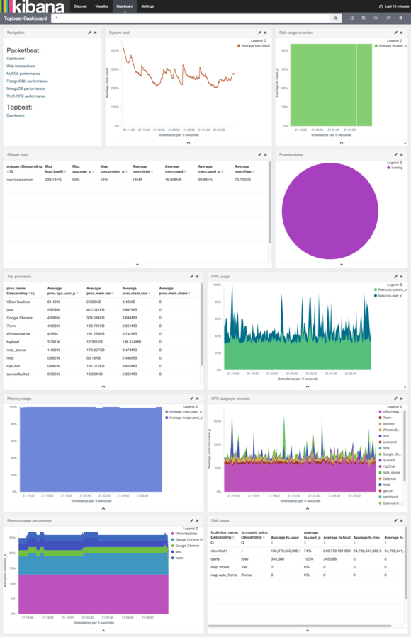
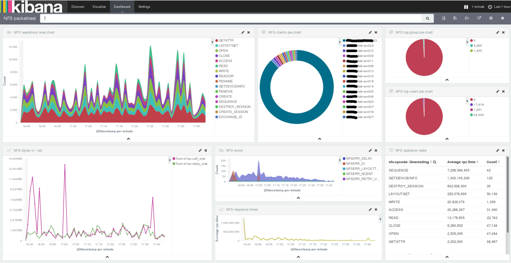
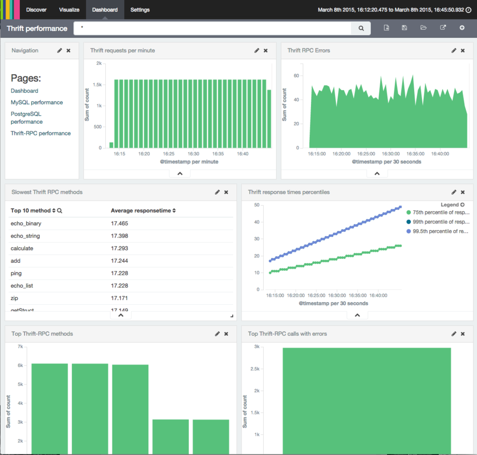
load.sh -url "http://es:9200"
First, A Comparison
Elastic ElasticSearch VS Your Own
AWS ES
- Fast
- Easy
- 512GB Limit Per Node (10 Node Max)
- Specific Versions
- Limited Plugins
- Limited Vertical Scaling
- Limited Horizontal Scaling
Artisanal ES
- Fast
- Easy-ish
- Limited by Your Wallet
- Mix-and-Match Versions
- Feast on Plugins
- (Virtually) Unlimited Vertical and Horizontal Scaling
Choose AWS ElasticSearch
- Only When You're Using AWS
- When You Won't Have More than 512GB for a While
- When You Don't Need Specific Plugins
Choose DIY ElasticSearch
- If You're Not on AWS
- If You Need to Scale Very Quickly
- If Your Measurements Show 512GB Will Not Be Enough
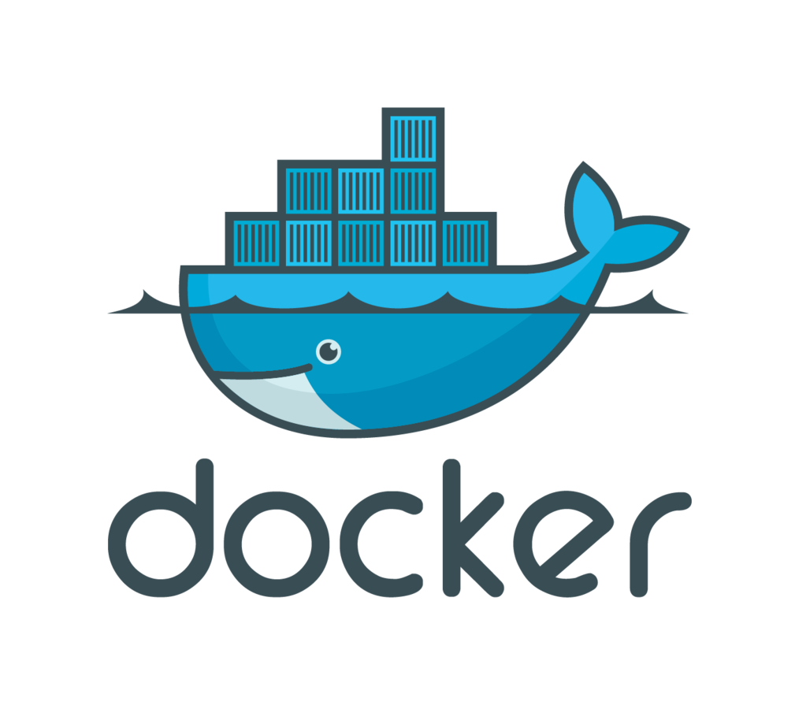
GitHub Repository
git pull --recursive https://github.com/ryanmaclean/5-min-elk-stack
docker-compose up
Thanks!
DevOps Slack - https://devopschat.co/